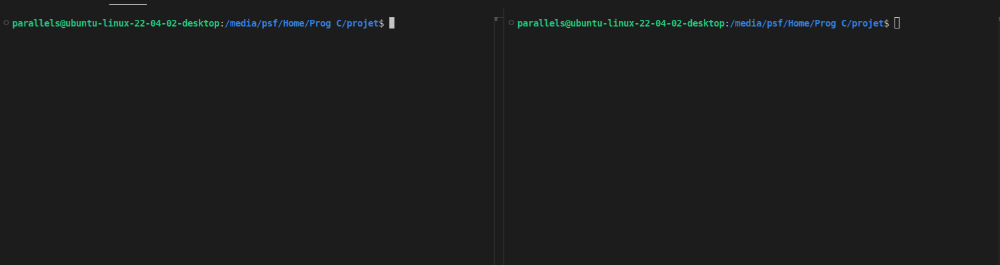
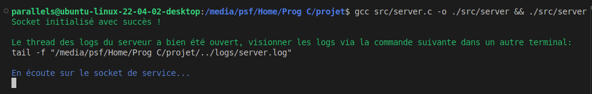
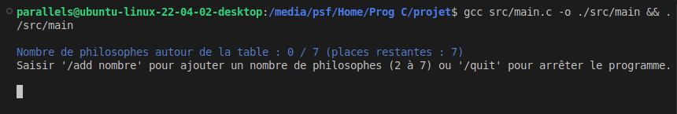
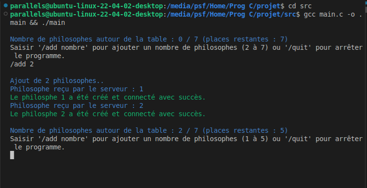
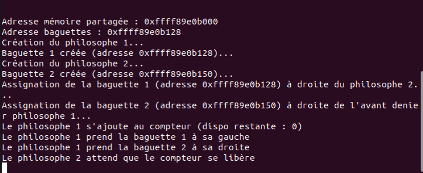
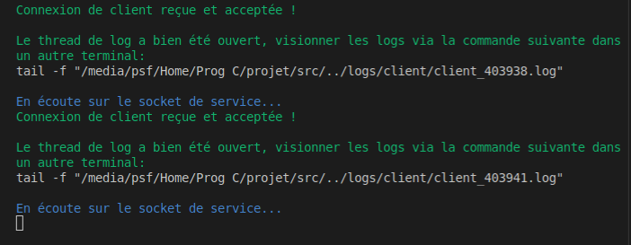
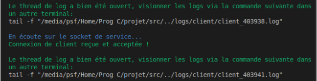
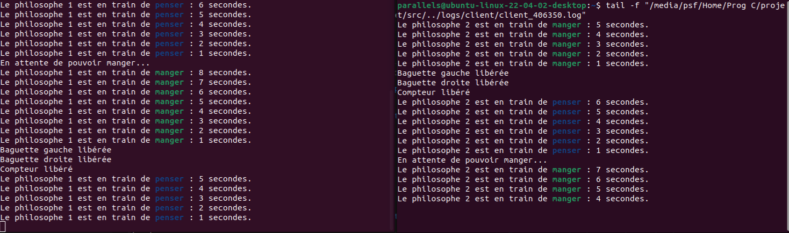
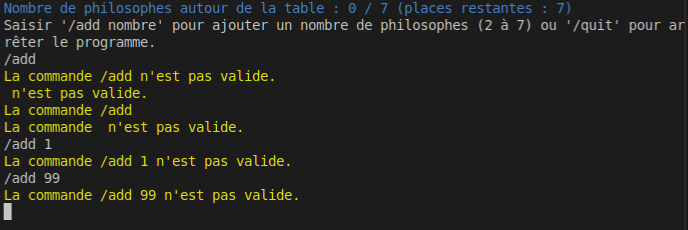
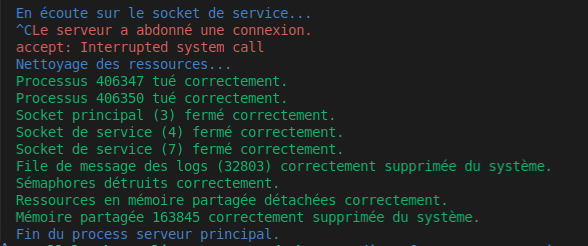

Pour mieux suivre ce guide, il est possible de préparer maintenant les différentes consoles qui seront utilisées.
2 consoles scindées horizontalement : ces deux consoles permettront de suivre les deux processus principaux :

1 console de suivi de logs : celle-ci permettra de visionner les logs principaux du serveur, permettant de vérifier les tâches de création de philosophes et de baguettes, et les adresses mémoire utilisées.
5 consoles scindées horizontalement : il y aura un fichier de log à suivre par philosophe, tous gérés parallèlement, pour visionner dynamiquement leur état côté serveur.
Pour démarrer le processus serveur principal, depuis la racine du projet, utiliser la commande suivante pour compiler le fichier et l'exécuter immédiatement dans la première console :
cd src && gcc server.c -o ./server && ./server
Une fois lancé, il reste à l'écoute de connexions clients.

Une première indication est donnée concernant les logs, il est possible de copier-coller la commande tail donnée dans une autre console (la deuxième sur les cinq préparées) pour suivre les logs d'information du serveur en direct. Le fichier concerné fait partie intégrante de la structure du projet.
Ou plus simplement, depuis la racine du projet et dans l'autre console, faire la commande suivante :
tail -f logs/server.log
Depuis la racine du projet, dans un troisième terminal, la commande suivante permet de compiler et exécuter le processus de gestion des clients.
cd src && gcc main.c -o ./main && ./main
Il permettra ensuite d'ajouter des philosophes à la volée.

Une fois le processus de gestion de client lancé, on voit plusieurs choses :
Il est maintenant possible d'écrire deux types de commandes :
/add NOMBRE : pour ajouter le nombre de philosophes souhaités. Il est possible d'en ajouter 2, puis 3, puis 1 etc. Jusqu'à la limite autorisée./quit: pour fermer l'interface.D'abord avec 2 philosophes :
/add 2

Chaque philosophe tentera de se connecter correctement au processus serveur pour envoyer une requête de création de philosophe, et le serveur envoi une réponse en retour pour lui donner son identifiant (3.5. Ajout de philosophes).
Le nombre de philosophes côté interface clients est bien passé à deux et le nombre de places restantes à 5.
Dans les logs serveur ouverts précédemment, on peut voir ceci :

Ce qui permet de constater de voir globalement comment les ressources sont utilisées et la création des baguettes et leurs adresses mémoire.
Côté terminal principal du serveur :

Nous sommes informés que des connexions clients ont bien été acceptées, et que le thread de log associé au processus enfant du philosophe est bien disponible via la commande donnée. Puis le serveur reste à l'écoute de nouvelles connexions.
Avec deux philosophes seulement pour l'instant, la lecture des actions et du bon déroulement de la synchronisation sera plus facile.
Dans deux des 5 consoles préparées, lancer les deux commandes tail données par le serveur lors de la création des clients en faisant un copié-collé :


Chaque seconde, le client envoi une requête de mise à jour au serveur qui prend en compte son état et le log. Si un philosophe a fini de penser, il reste en attente d'une réponse du serveur pour pouvoir manger.
Maintenant, il est possible d'ajouter autant de philosophes que souhaité tant que la limite n'est pas atteinte, et de visualiser leurs logs dans les autres terminaux.
Lorsqu'elle est atteinte, ou en cas d'un /add trop bas ou trop élevé par rapport ce que la console affiche, ou d'une commande qui n'existe pas, un warning sera envoyé :

La commande /quitpermet de quitter le programme, mais Ctrl + Cpeut aussi être utilisé.
Quelle que soit la manière dont sont interrompus les clients ou le serveur, le serveur gère la destruction des ressources en les centralisant dans une structure ServerContext (voir 3.1. Aperçu global).

Le serveur est développé de manière à correctement libérer toutes les ressources des mécanismes IPC, même en cas d'interruption soudaine.
Mais en cas de problème particulier ou inattendu, utiliser la commande suivante depuis la racine du projet pour exécuter le script remove_ipcs.sh:
sh remove_ipcs.sh